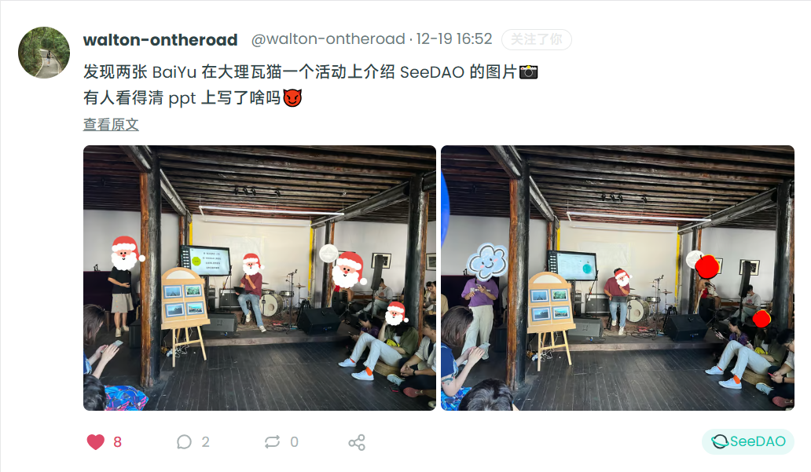
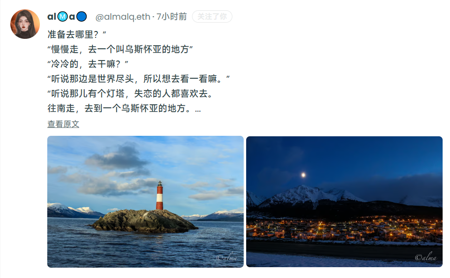
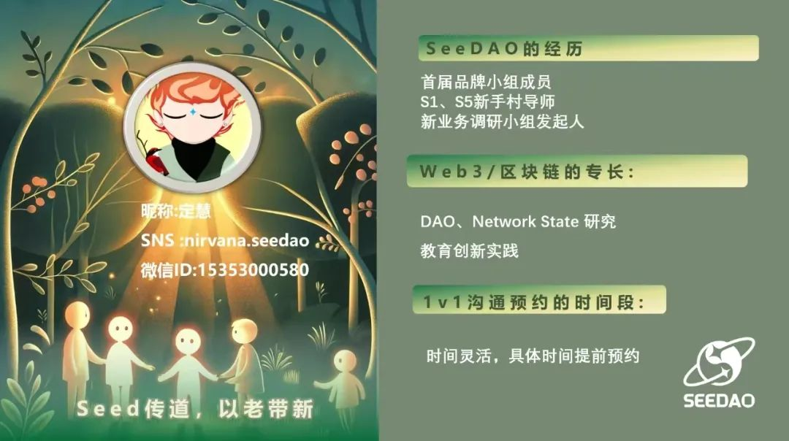
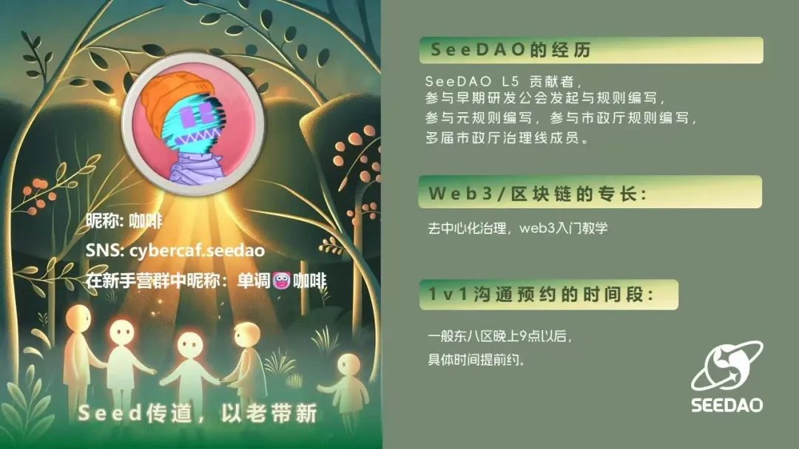
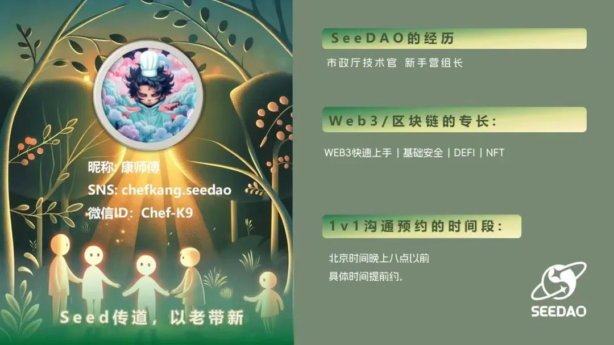
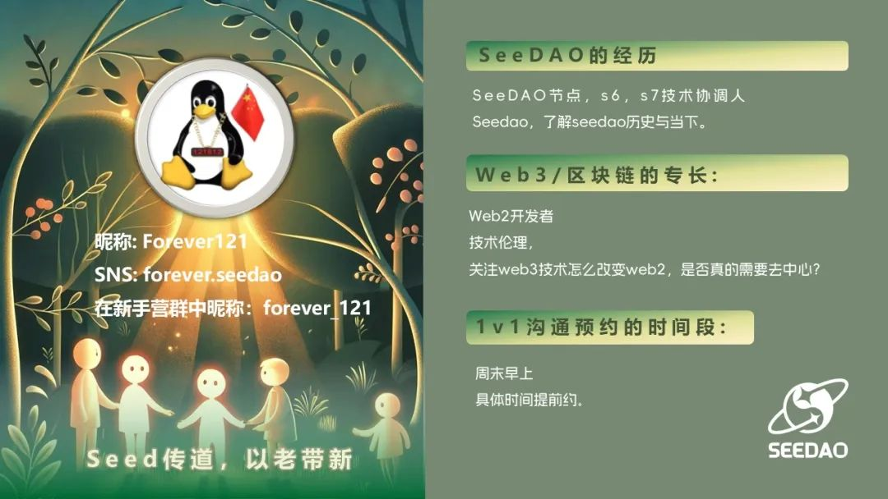
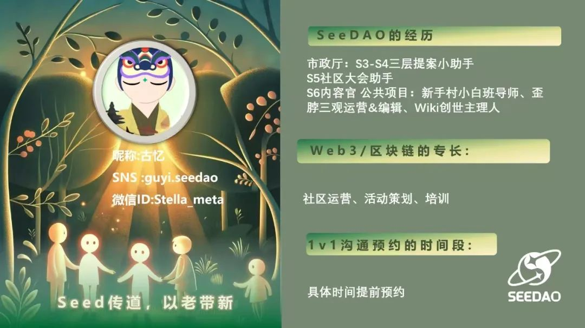
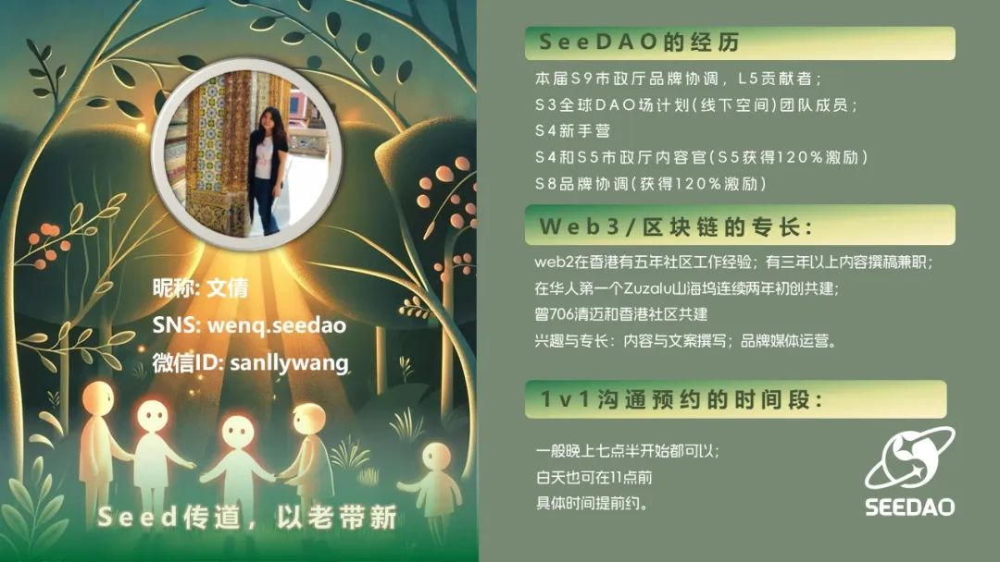

冬 至 快 乐

作为一年之中最重要的节气之一，冬至不仅仅是一个天文学上的时间点，更在历史长河中被赋予了深厚的文化意涵：有“冬节”、“长至节”、“亚岁” 等别称。
数字游民的生活方式正在流行，但 "边走边活" 也面临着一个有趣的小挑战：我们真的需要带那么多东西吗？还是说，其实只有某些特定的物品才能让我们的生活高效又幸福？
我现在正在捣鼓一个有点好玩的项目，叫 “伴走 Move Mate”。专注于模块化、情感化、可以参与设计的产品品牌。我们做过一些实验，比如能变椅子的电脑包、互动模块家具，还有“游走的口袋”驻地项目（里面有很多温暖的小故事）。我希望听听大家的声音，一起探索：什么东西才是我们在这种自由流浪生活中最需要的？
这是我第一次在社区提案，希望能找到志同道合的小伙伴一起玩这个调研，分享故事，一起聊聊在路上的那些好物和遗憾吧~
社区在去中心化社交平台Tako，每天都有小伙伴在上面分享相片与故事
https://app.tako.so/community/trend/seedao


Seed 传道，老带新的1v1 交流之旅 也在这个明朗的冬日热烈展开 🐸
持有SNS，积分低于2w的新人伙伴，在 2025-02-15前 有5次预约Seed成员的1v1沟通交流，彼此以生命影响另一个生命。
寻找 Seed 的两种方式https://www.notion.so/seedao/160cab053d3a815ea7d4cf6c17969de5?v=160cab053d3a81f39220000c95d444a9&pvs=4
b、SeeDAO 微信群中查看Seed名片
选择自己意向的Seed，发起首次沟通，请直接添加Seed微信好友，备注"seed传道"，确保顺利通过。





